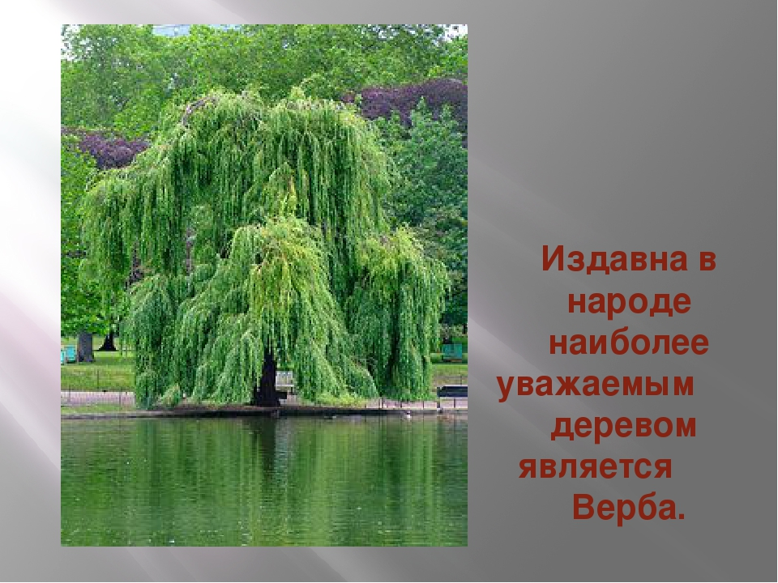
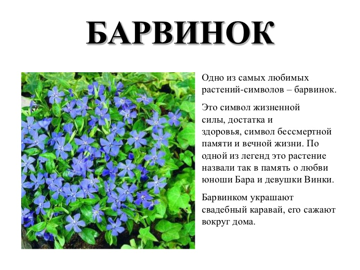
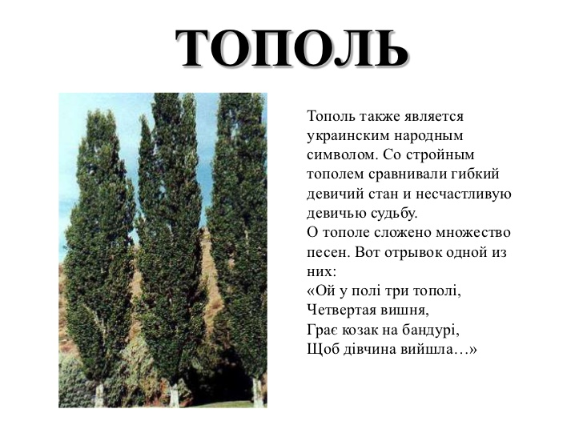
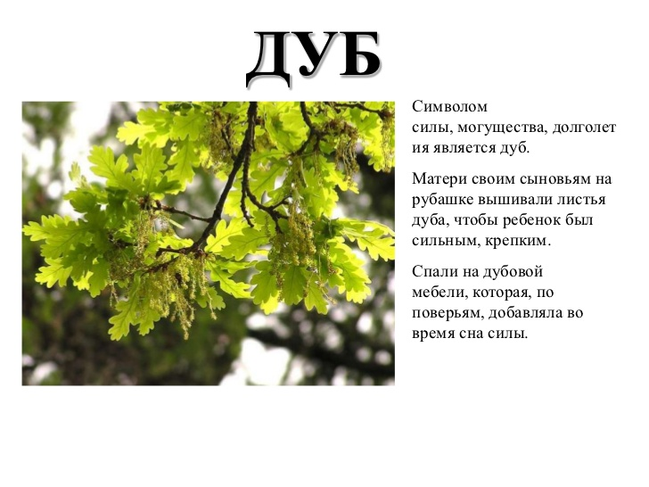

Найпопулярнійші народні символи України - це калина та верба

В Україні є таке прислів'я - "Без верби і калини нема України". Люблять ці рослини за те що вони красиві,захватуютемуть дух людей.
Також з квітів є символ України - барвинок
Барвінок - це символ здоров'я, сили та життя. Його саджають біля хати
Тополь - також символ України
Тополь - це знак стрійності,сили.
І дуб символ України
Дуб має знак сили, могутності та довге життя. Матері шили на вишиванки листок дуба синов'ям, щоб жили довго.